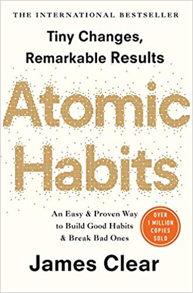

The Alchemist

Paulo Coelho
The Alchemist is a novel by Brazilian author Paulo Coelho which was first published in
1988. An allegorical novel, The Alchemist follows a young Andalusian shepherd in his journey to the pyramids of
Egypt, after having a recurring dream of finding a treasure there.
The 4-Hour Workweek

Thimothy Ferriss
The 4-Hour Workweek: Escape 9–5, Live Anywhere, and Join the New Rich is a self-help book by Timothy
Ferriss, an American writer, educational activist, and entrepreneur. The book spent four years on The New York
Times Best Seller List, was translated into 40 languages.
The Psychology of Money

Morgan Housel
The Psychology of Money explores how money moves around in an economy and how personal biases and the emotional
factor play an important role in our financial decisions, as well as how to think more rationally and make better
decisions when it comes to money.
Atomic Habits

James Clear
Atomic Habits by James Clear is a comprehensive, practical guide on how to change your habits and get 1% better
every day. Using a framework called the Four Laws of Behavior Change, Atomic Habits teaches readers a simple set
of rules for creating good habits and breaking bad ones.
Rich dad poor dad

Robert Kiyosaki, Sharon Lechter
Rich Dad Poor Dad by Robert Kiyosaki and Sharon Lechter is a book that came out in 1997 and focuses on the
importance of financial literacy from an early age. Throughout the book, the author explains how a person can
increase their wealth by investing in assets and by being smart with money.
The Intelligent Investor

Benjamin Graham
The Intelligent Investor by Benjamin Graham, first published in 1949, is a widely acclaimed book on value
investing. The book provides strategies on how to successfully use value investing in the stock market.